喝咖啡果然能抵擋睡意，瞌睡蟲一隻也不剩的全部被趕跑，讓我能順利地在睡前就將遊記給寫完。
為了整理遊記，結果拖到凌晨兩點半才入睡，咖啡的效力可沒辦法說停就停，還剩下四個小時可以睡覺，努力的數綿羊進入夢鄉。
好不容易睡著的時候，天已經亮了，趕緊收拾東西想在Peter夫婦起床前就悄然離開。
東西搬到車庫沒多久，Ulrike就出現了，探頭進來問我昨天睡得好嗎？
二十分鐘之後，Peter也帶著他的Nikon相機過來，這時候我已經全部搞定，正準備要出發。
但既然大家都醒了，那不如就利用這個機會在Peter家上網，這樣出發之後就不需要費心思找網路上傳遊記。
Peter家養了一隻貓跟一隻狗，貓已經七歲了、啃掉藍白拖一角的狗則八個月大而已。
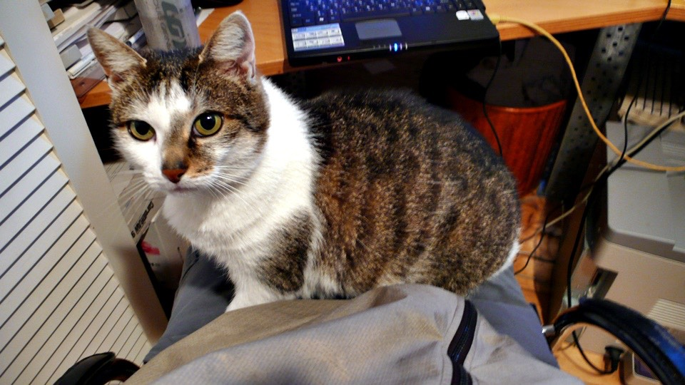
雖然牠現在很乖的在屋子裡看我打電腦，但其實牠是整個家裡最悠哉、不受拘束的成員。
小狗會被關在房子裡不給出去，這隻貓卻連項圈都沒有，可以自由的跑遍整各社區。
遊記上傳完畢之後就真的要出發了，早上吃著昨天Ulrike自己烘培的麵包，鹹鹹的很好吃，這好像是某種德國的傳統麵包。
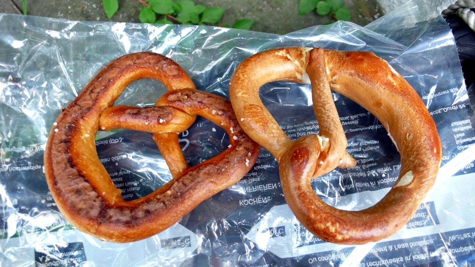
在樓下做暖身操，揮手跟去上班的Ulrike說掰掰，和Peter留下這張合影之後正式上路。
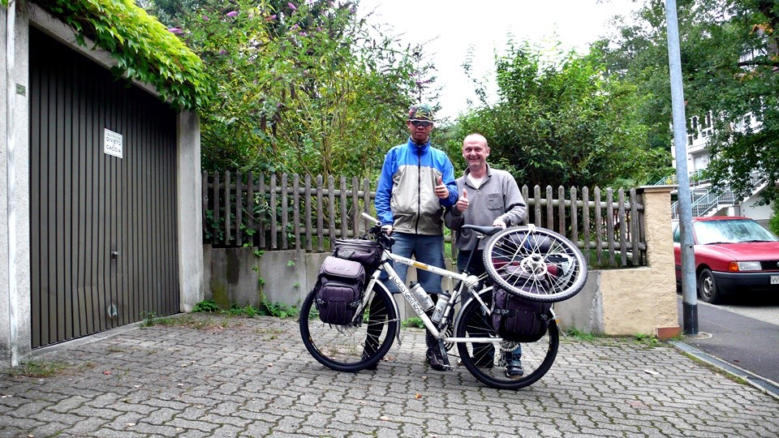
昨天晚上遇到慢跑中的Peter，在夜裡我們還研究了一下晚上以及明天的天氣會怎樣？
Peter說晚上應該不會下雨，明天大概也是好天氣。
我也是這麼希望，可惜天不從人願，一出發就是陰雨飄渺的天氣，穿著厚衣服是不會怕冷，只是騎車的愉快心情就削減許多。
拿到Peter送的地圖之後接下來的路就好走很多，先找到過河的橋到對岸去，這樣就不需要進城市大迷路，可以繞圈離開這邊接著往下走。
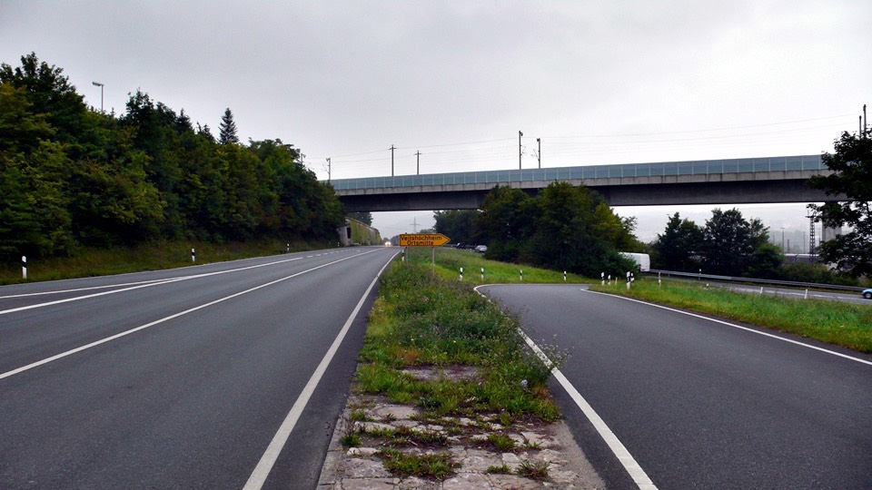
整個是非常陰雨的天氣，好懷念陽光普照的時光呀。
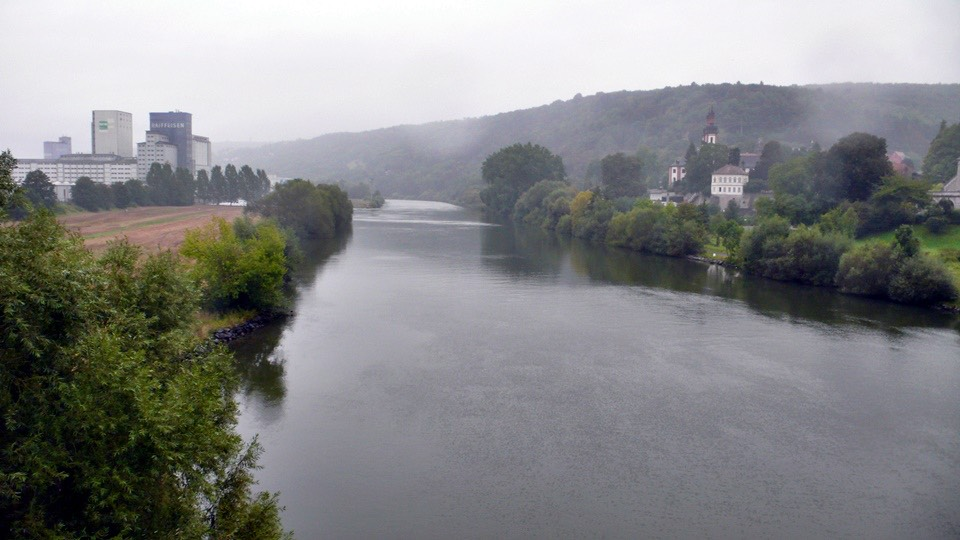
這一條河流經前面的大城市，跟萊茵河還是多瑙河匯流之後進入大海。
Peter架設了一個航海的網站，他說等自己將來多存一點錢，有空閒時間的時候，自己也要買一艘船去環遊世界。
不同於其他人都是從某個港口都市出發，他的出發地就在家鄉，德國中部某一個不知名的小鎮，然後從這條河開始航行，進入大海。
聽起來有點不可思議，但是透過地圖的講解，他的想法的確是可行的，如果被他達成了這個夢想，那大概是世界上第一人從內陸開始航海。
昨天吃飯的時候我笑著對他說：『如果你成功辦到了，那我會從電視上聽到這個消息。』
過橋之後就抵達了昨天一直很想過來的對岸，本來以為這邊是單車專用道，結果卻是狹小的道路，頂多是綠意多一點罷了。
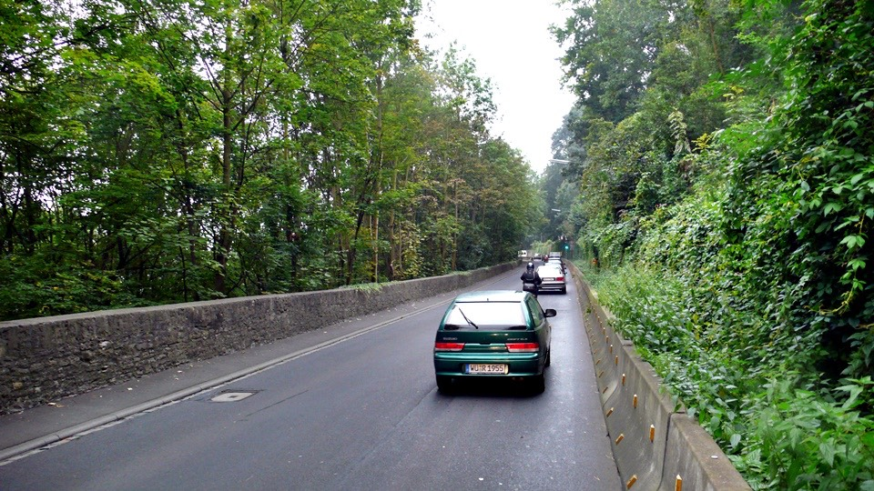
一路順著走，搭配地圖研究路牌，非常穩當的一步一步離開這座城市，只是有一個小小的問題，聯外道路有一小段被規劃成汽車專用道。
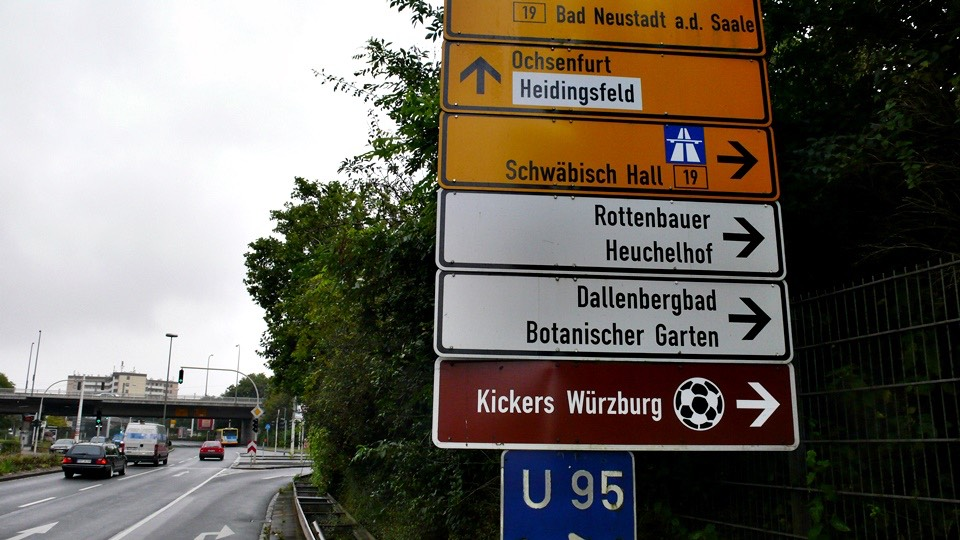
我必須要走的是黃色十九號道路，它的確是單車可以騎的路段，但靠近城市的這一段大約五公里的路則是禁止自行車上去。
看著地圖尋找繞路的可能性，越看頭越痛，心裡想說反正才短短五公里而已，只要硬上這一段，之後就可以大方的騎了。
所以硬著頭皮還是給它騎了上去，大約騎了兩公里之後，就變成這樣。
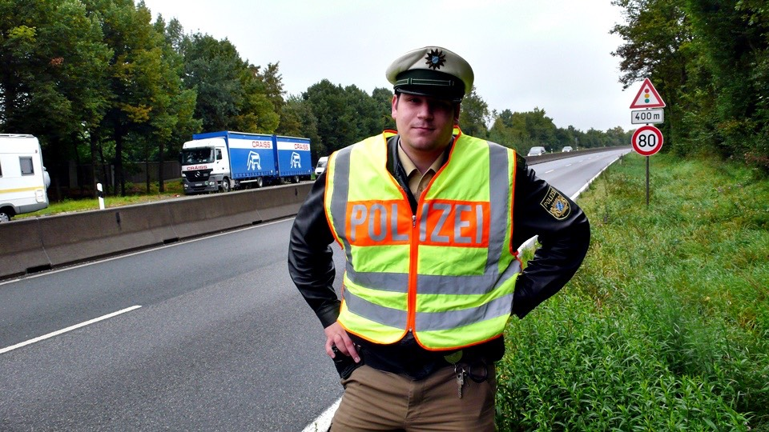
他是在對向車道攔檢超速的警察，看到我騎自行車，非常危險地穿越車道將我攔下來。
英文不是很溜的他，試著跟我解釋這邊的情況，我則適時的幫忙補充困難的單字。
警察說『這條路車很多，車速又快，非常....非常...』
『危險？』
警察說『對！危險。騎自行車的人常發生...發生...』
『事故？』
警察說：『對！事故。所以不可以騎自行車，這樣是違規，要罰款的。』
接著就拿過我的護照，繼續危險的跨越道路，去請示上級該怎麼處理我的狀況。
他們在對面討論很久，我自己則想說最有可能就是叫我牽車回頭走，但是逆向走在快速道路未免太危險了。
道路中間又有分隔島，不太可能將車子搬到對向車道。
如果要動用到警察載我往回走，甚至好心的載我往前走到這一段路結束，在這麼勞師動眾的情況下，那罰單可能免不了。
自己設想著所有的可能性，然後警察大人就拿著我的護照回來了。
結論是，繼續讓我往下走，直到汽車專用道結束為止，大概還有三公里的路。
但是不准我繼續用騎的，必須用牽車的方式走過這一段，並且保持人在內側，而且只要有草地可以走，就不可以踏上柏油路。
OK～！簡單明瞭，我會乖乖遵守的，反正只要能走過這一段就好了。
然後就開始下車用牽的，完全遵守警察跟我說的規則，只要有草地可以走，就絕對不可以踏上柏油路。
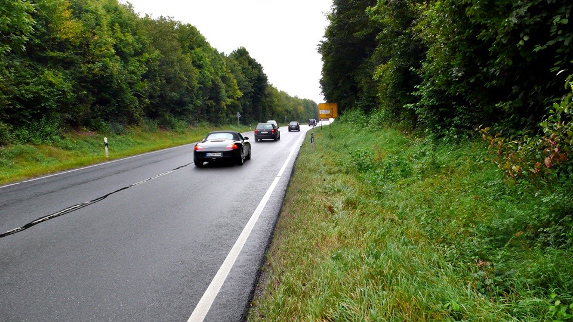
下過雨的草地上都是水滴，鞋子很快的就濕透，才不過一大早，整雙鞋子就已經泡湯。
看來今天不用等到下午五點，等走過這段路之後就可以換穿藍白拖騎一整天的車了。
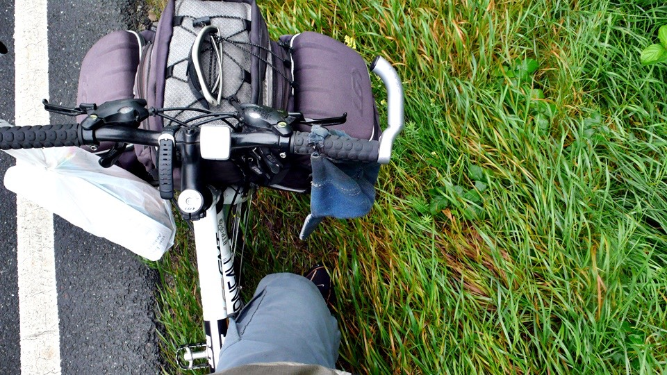
這段路的景色真是漂亮，設計成高架道路，繞過底下蜿蜒的山脈，用牽車的也沒什麼不好，反正這一路都是爬坡，就算讓我用騎的也是騎不動。
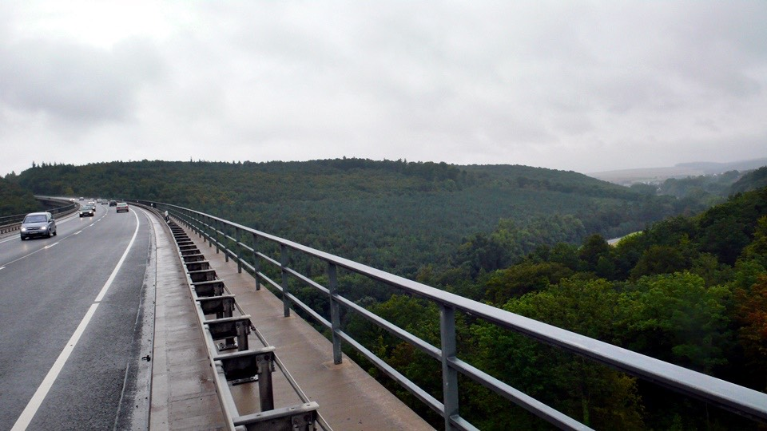
一開始牽五分鐘的車之後就離開了警察的視線範圍，有人可能會想說，那就趁機偷偷騎吧。
心裡只有閃過這個念頭一瞬間，並沒有付諸實現，一路上就乖乖的牽著車，直到汽車專用道結束的告示牌出現為止。
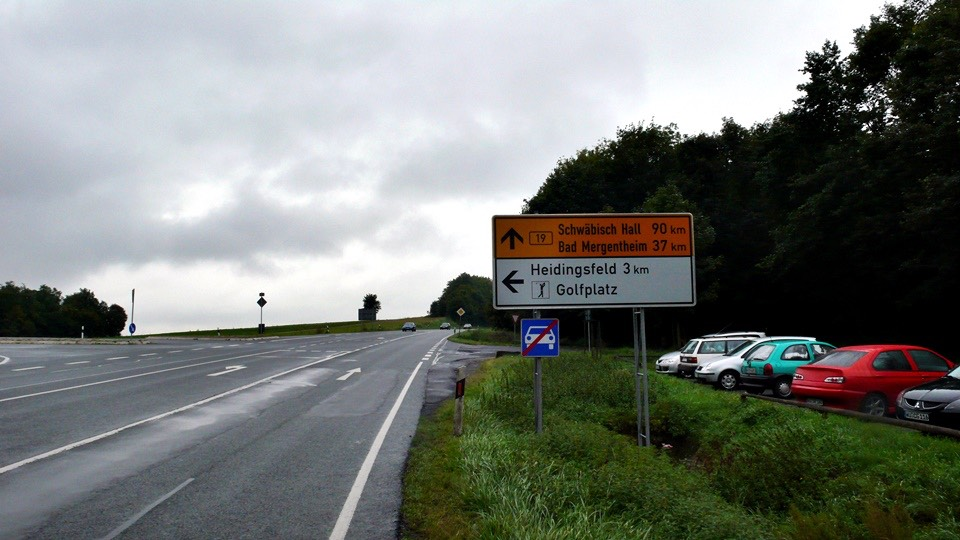
從這一段路之後就可以自在大方的騎車，不用怕又被警察給攔下來了。
除了這個標示之外，這段路的前後根本沒有什麼差別，車子還是很多，車速還是很快，所以騎車的時候眼睛要放亮一點。
一走過這個汽車專用道結束的牌子，整個人就鬆了一口氣，總算是牽完了。
後頭開來一輛警車，很明顯是剛才那位警察的同僚，他們一路上開著車不停的在路上和我交會，車牌號碼我都會背了。
可以說是要監視我有沒有偷偷騎車，也可以說是要注意我的安危。
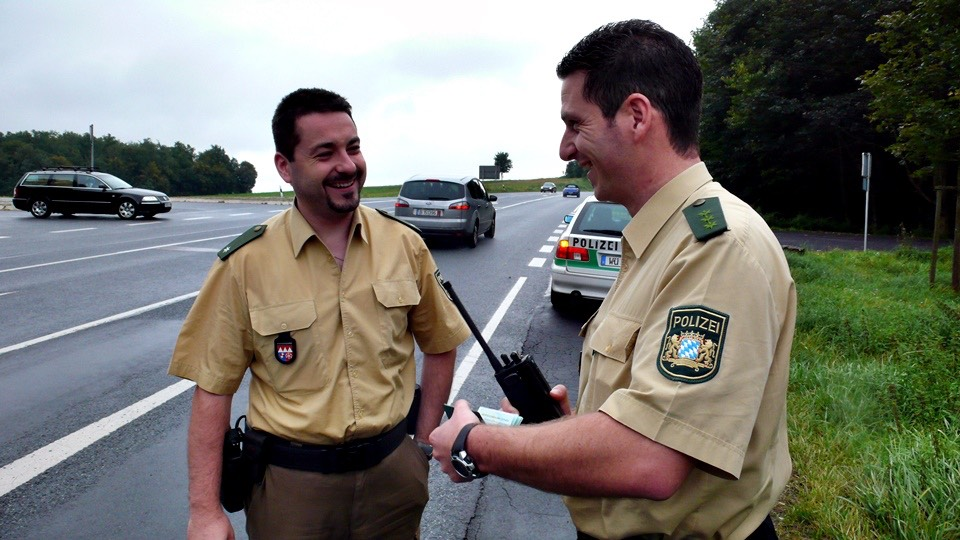
我很自豪的說剛才被警察攔下來，他叫我用牽的走到這裡，所以不是我硬闖汽車專用道喔。
兩位警察說他們知道啦，無線電裡傳來的就是剛才那位將我攔下來的警察的關切聲音，大概是在問他的同事，那個牽車的人平安走到底了沒？
德國人給的人感覺一向是很守法、一板一眼、嚴肅，但我遇到的人民保母、執法最嚴厲的警察，卻也對我網開一面。
沒有收到罰單，而且還幫我走過這一段路，不僅是叫我用牽的就把我打發掉那麼簡單。
警察很有責任心的為自己做的決定負責，也許他在工作崗位上不能離開，所以就請同事幫忙沿路關心一下我的情況，一直到我平安走完為止。
情理法：於情於理，警察都不覺得在當時叫我牽車回頭走是最好的處置方式。
於法，那就更簡單，直接開一張罰單給我就好了，但是他們也沒有這麼做。
多謝你們的寬容和協助，接下來的路就好走很多了～
換上拖鞋，將濕透的鞋襪脫掉拿去晾乾，這一本就是Peter昨天送給我的地圖，一路可以看到巴黎，地圖詳細又清楚。
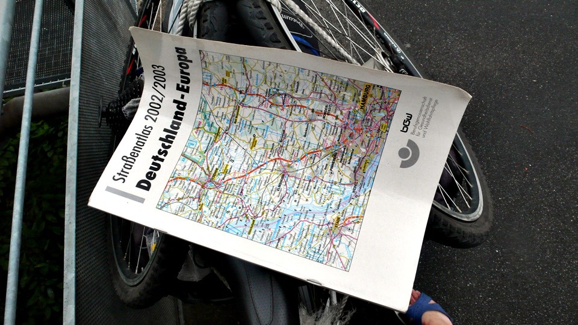
有地圖拿在手上的感覺實在太好了！
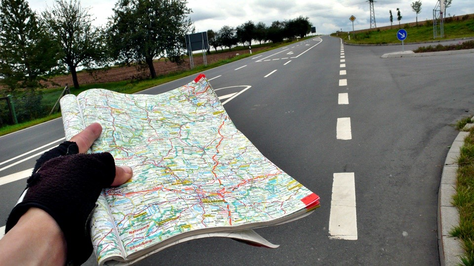
可以徹底的跟迷路說再見了～掰掰～
透過這本地圖我還附帶的發現一個驚人的事實，原來我已經快要騎完德國了，就算今天騎不到，明天也可以騎到德法的邊界。
旅行的最終章即將要展開，快馬加鞭～衝！
一衝就是平交道，自動放下的柵欄壞掉了，所以有幾個警察在這邊駐守，當有火車要經過的時候，就手動的掛上紅白色的鐵鍊。
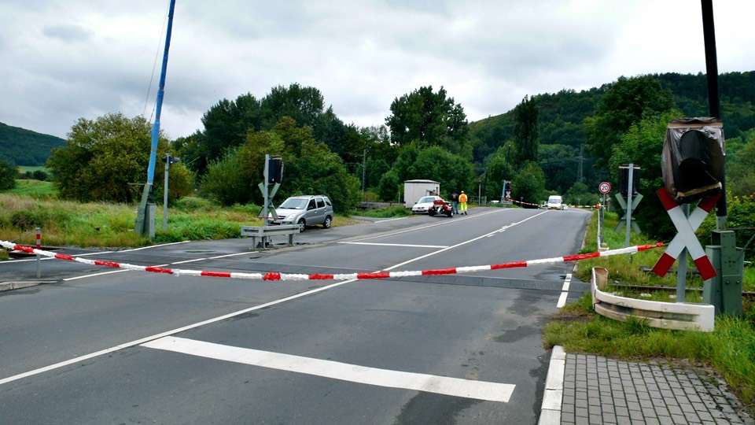
路邊都是玉米田，或者是種很多白蘿蔔的田地，究竟是什麼地方在種這些南瓜呢？
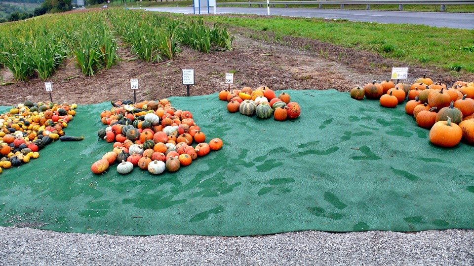
大顆的比較貴，外型也比較好看，攤位擺在野外，並沒有看見農家的主人在販售，只有插著標價牌，南瓜被偷走也無所謂嗎？
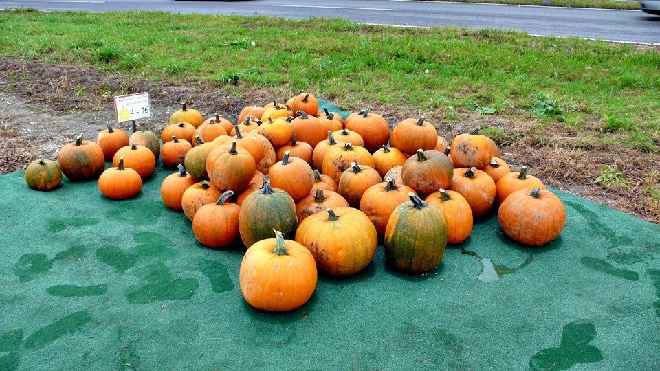
小顆的便宜很多，一顆(還是一公斤)只要一元，外型差異很大，這些全部都是南瓜嗎？可惜這個買了也不知道要怎麼吃。
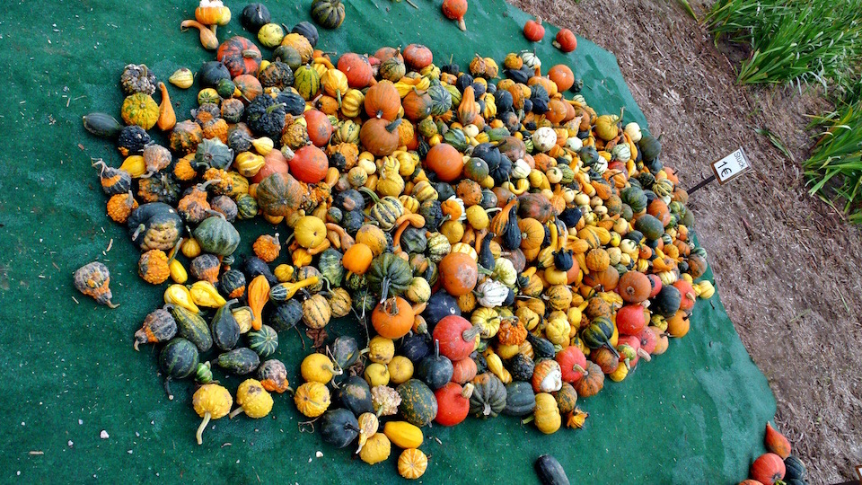
把握每一個出現水龍頭的時刻，此時要是水壺裡是滿的，就將水全部喝光然後裝滿水，這樣了不起只是多跑幾次廁所罷了。
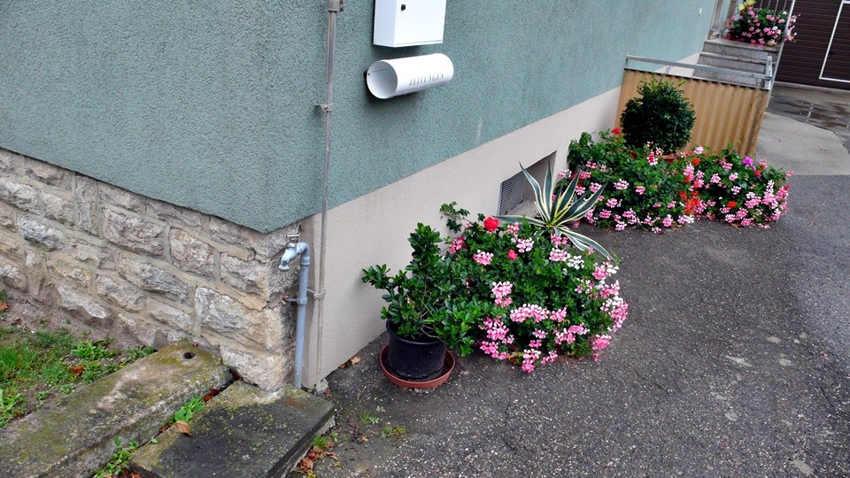
順便用水龍頭的水洗腳，早上穿著鞋子走在溼溼的草地中，因為潮溼的緣故，鞋襪都飄散著鹹魚的酸味，腳自然也乾淨不到哪裡去。
巡田的時候到了，田野中的自行車專用道，來看看農作物們有沒有長得很好。
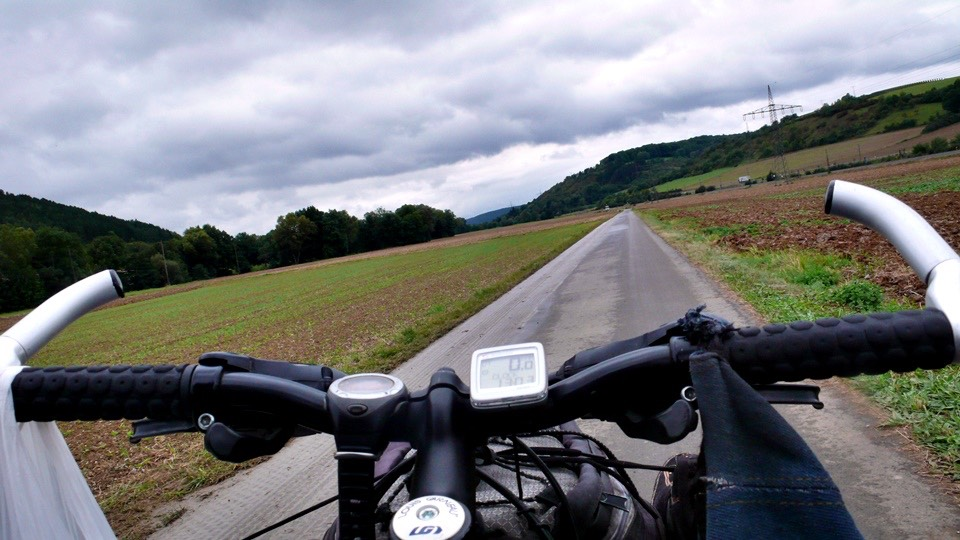
自行車專用道都不寬，一輛汽車剛好可以塞滿整條路，這輛卡車跟挖土機就堵住了我的去路。

只好跟早上一樣走在草地上，還要低頭閃開旋轉中的挖土機車體，然後繼續展開巡田的工作，這邊都沒有種什麼農作物，很沒有巡田的成就感。
連續好幾天都是陰雨綿綿，非常難得的才會看見太陽露臉一下子。
路旁的草堆中爬出了很多蝓蛞，整條都是深咖啡色，還可以清楚的看見觸角，長度大約在六～十公分之間。
一動也不動的停在馬路上等死，出現的位置大多靠近草地跟路邊的白色線條這一帶。
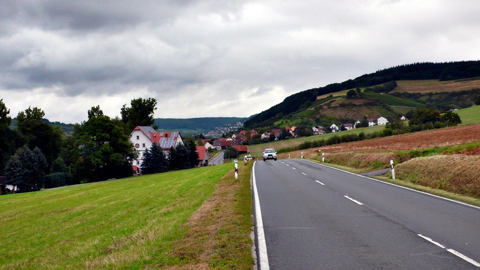
騎車的時候要非常非常小心的閃避這些噁心的軟體動物，深怕一不小心就會將它們輾過去。
一路上除了這些外觀良好的蝓蛞之外，一大半都已經被汽車給壓扁，留下一坨像鼻涕的糊狀物，越看越噁心，但是又不能不看。
不專心看著路面的話，下場就是我自己也會碾過這些鼻涕蟲，噗的噴出膿液，光是用想像的就反胃想吐。
今天的主要糧食就是自來水配上昨天買的吐司、巧克力，下午四點多的時候進入超市進行今天的採買。

昨天已經預支了開銷去買巧克力，所以今天就不能買太多東西，一條大片的吐司繼續成為主食。
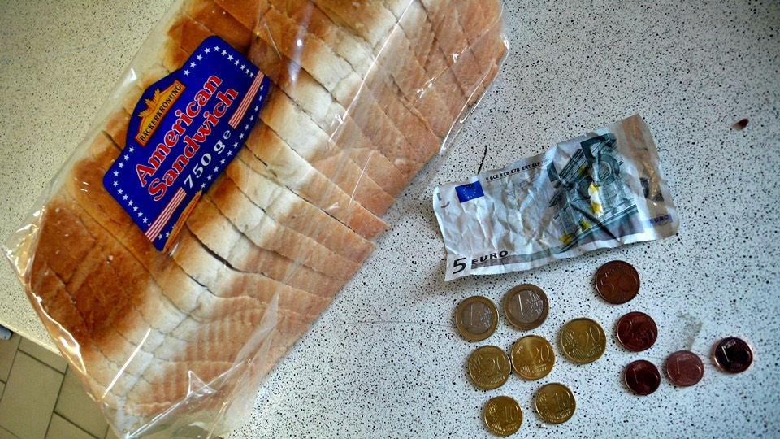
經過了七天的花費，本來身上有21.84歐元，唯一的一張紙鈔還沒花掉，截至目前為止花了13.74歐元。
身上還有8.11歐元，還可以花上四天左右，靠這些錢活到抵達巴黎應該不成問題，希望可以找到比吐司還便宜，同時又很好吃的主食。
涼爽的天候下，滑下坡的時候跟搭雲霄飛車沒兩樣，進入歐洲之後就不需要再評比道路水準的好壞，只有完美兩個字可以形容。

滑完下坡就抵達這個小城鎮，很稀奇的又露出一點點藍天。
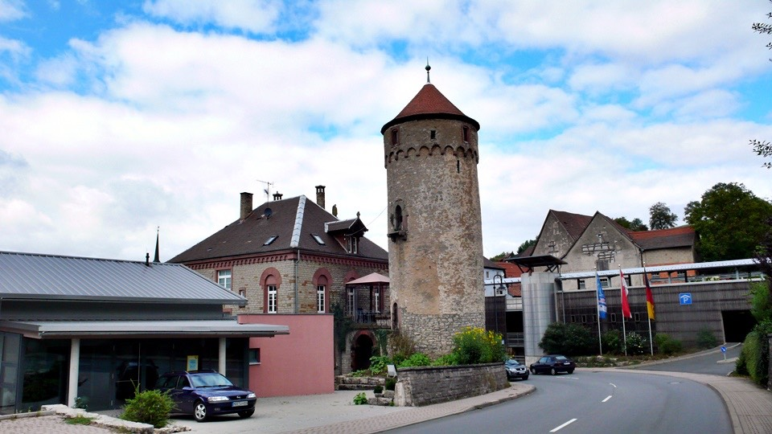
騎車的時候都是山坡路段居多，雖然氣溫只有十五度左右，但汗水還是流個不停。
把厚重的衣服脫掉，跟吐司放在同一個塑膠袋裡掛在單車把手上，穿著睡衣騎車。
這件睡衣可是大有來頭，兩年前就是穿著這一件衣服去環法，每天晚上住旅館就洗一次，隔天晾乾繼續穿，穿了將近兩個月都是同一件。
這次它被降格為睡衣，結果因為天氣的多變，睡衣又再度變成騎車時的主要穿著，勾起絲絲環法的回憶，快的話明天就進入法國的領域了。
第二度補充飲水是在這間停車場的廁所，Peter說德國的自來水生飲是沒問題的，努力的多喝一點吧。
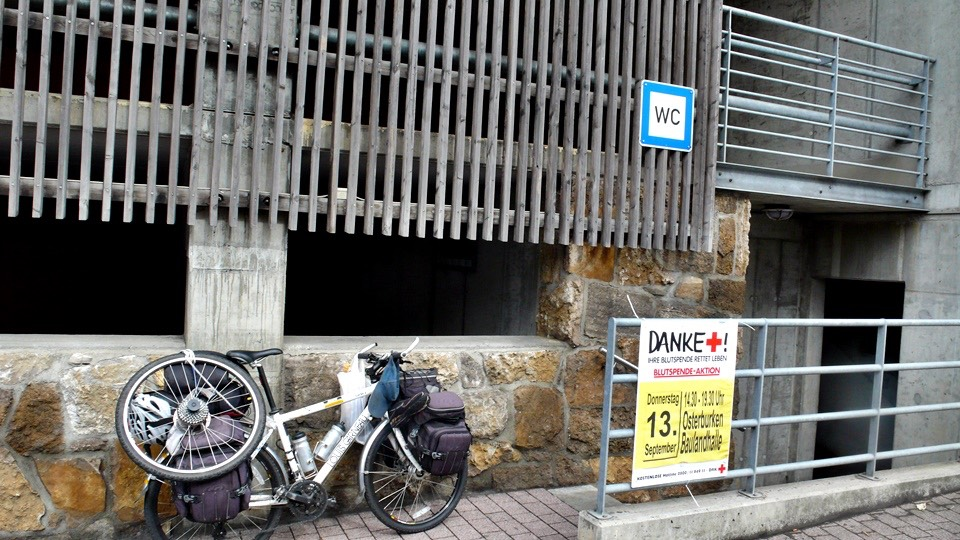
山羊噴泉，想起Peter說他年輕的時候跟Ulrike跑遍全歐洲去旅行，在義大利的時候都是喝泉水，不僅好喝又甘甜。
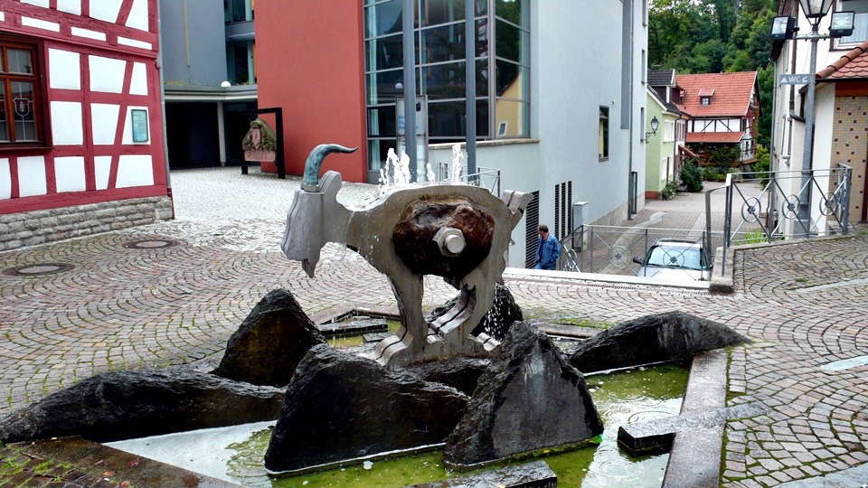
早上從被警察攔下來之後，接著都很順暢的騎著車，一整天也沒什麼停下來休息，除了偶爾去裝水或是進超市買東西之外。
里程表很快的就突破一百公里，可惜今天還是沒辦法騎到兩百公里這麼遠，不過得知已經快進入法國了，那也就沒必要如此趕路。
走到一條道路的交會處，三條黃色的路都集中在一起，前面自然就變成汽車專用道。
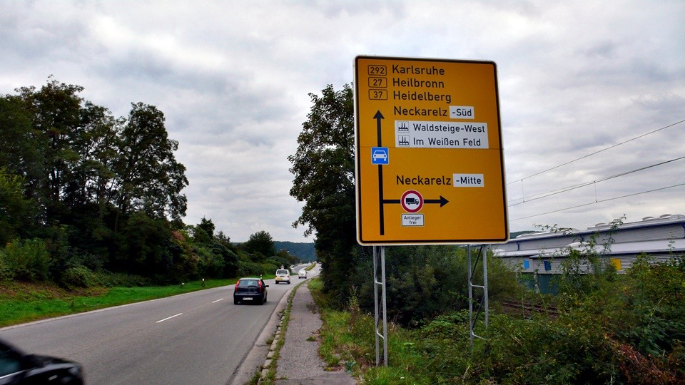
要進入法國之前最後我會抵達的城市是Karlsruhe，同樣也被汽車專用道的牌子給限制住，那就右轉找路繞過這一段吧。
一天之內不要違規太多次比較好，不見得每次都會遇到好心的警察。
看起來是湖泊，事實上它是一條河流，目前大約是七點半，平常這個時候都會停下車欣賞一下夕陽的美麗。
可惜今天雲層太厚了，根本看不見太陽的方位，早上沒看到日出，晚上沒看見落日，一整天就這麼結束了，有點不實際的感覺。
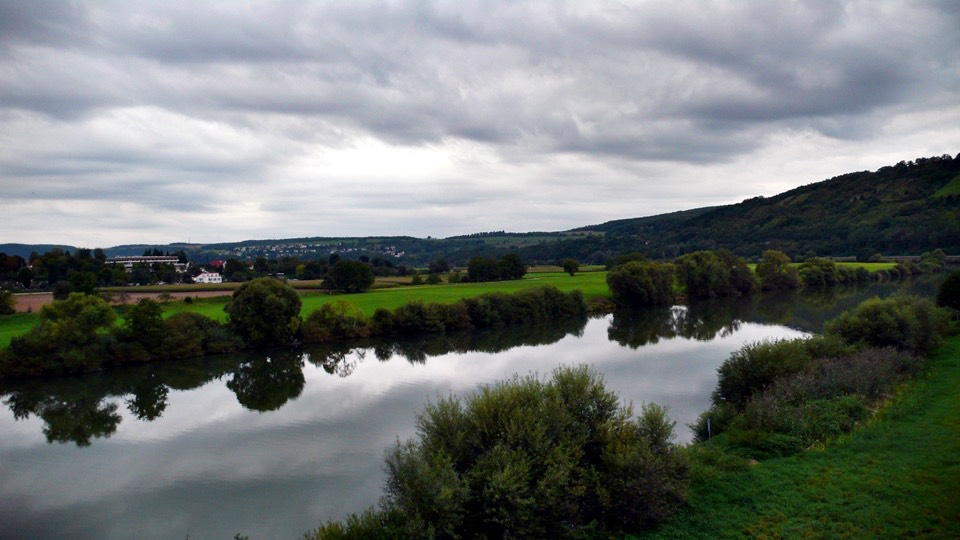
看著『i』的牌子找路繞過汽車專用道，旁邊都是各式各樣的廣告商家，當然也不乏旅館的招牌，地圖中也會標示哪邊有住宿的場所。
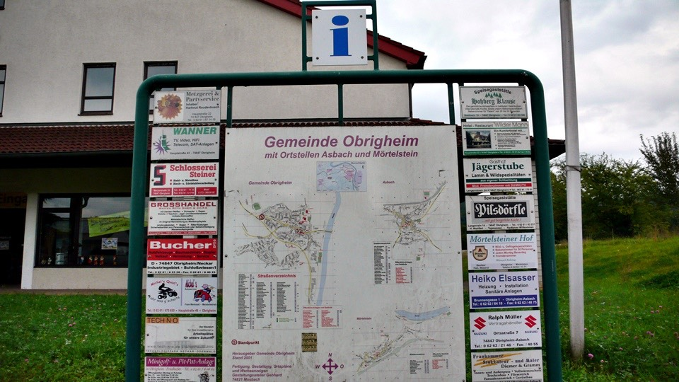
我只要找到離開的路就好了，住宿什麼的就等抵達巴黎再說吧。
蠻幸運的果然有路能夠繞過這一段，距離Karlsruhe剩下不到八十公里，這段路就交給明天去騎吧。
明天應該是在德國的最後一天，騎快一點還有機會可以進入法國。
晚上在某一個路旁的小鎮找到一間工廠，外面是一格又一格的停車場，沒停放太多車輛，看起來相當的空曠，找一個不引人注目的角落棲身一晚。
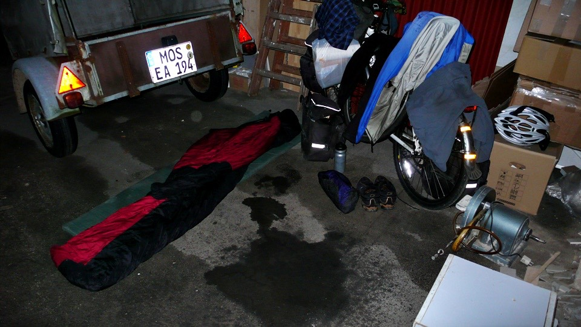
本來我是想睡在那個拖車裡面，但是整個很搖晃，輕輕一推就會滑動，踩進一隻腳整輛拖車就騰空離地。
所以只好睡在冷冰冰的地上，舖上睡墊之後倒也沒多冰冷，只能說昨天睡的地方太高級，今天恢復成一般的水準馬上就有點不適應。
一開始懶得拿出帳蓬來，想說這邊應該沒有蚊子吧，直到手臂被咬了一個腫包之後才認命的搭起帳篷。
昨天雖然住在Peter家很舒適，但睡眠時間嚴重不足，今天又可以恢復成九點躺平睡到天亮的充足模式了。
繼續閱讀：9.8 單車之道
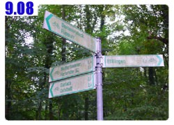
歐洲-歐元－ 1：45 台幣
9.7
總計：0.69元
超級市場大條吐司0.69元